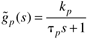

| [ Team LiB ] |
|
9.3 IMC-Based Feedback Design for Delay-Free ProcessesThe IMC-based PID procedure, like the IMC procedure from Chapter 8, can be based on either good setpoint tracking or improved disturbance rejection. Here, we first consider design for setpoint tracking. Focus on Setpoint TrackingThe procedure outlined in Section 9.2 is illustrated by way of two examples: a first-order process and a second-order process. For clarity we drop the (~) notation on all of the process model parameters. Example 9.1: IMC-Based PID Design for a First-Order ProcessFind the PID-equivalent to IMC for a first-order process 
Equating terms in Equations (9.5) and (9.6), we find the following values for the PI tuning parameters The IMC-based PID design procedure for a first-order process has resulted in a PI control law. The major difference is that there are no longer two degrees of freedom in the tuning parameters (kc, tI)—the IMC-based procedure shows that only the proportional gain needs to be adjusted. The integral time is simply set equal to the process time constant. Notice that the proportional gain is inversely related to l, which makes sense. If l is small (closed loop is "fast"), the controller gain must be large. Similarly, if l is large (closed loop is "slow"), the controller gain must be small. Also notice that the same results were obtained using the direct synthesis method—a specified first-order closed-loop response for a first-order process leads to a PI controller with the parameter values shown in Equation (9.7). This procedure can be used to develop the equivalent PID (plus lag, in some cases) controller for a number of other transfer functions, as shown in Table 9-1. In the next example, we derive the PID controller for a second-order process. Example 9.2: IMC-Based PID Design for a Second-Order ProcessFind the PID equivalent to IMC for a second-order process
The IMC-based PID controllers for first- and second-order processes, as designed above, have good setpoint tracking characteristics. Although setpoint tracking may be quite good, disturbance rejection can be poor, particularly for input disturbances. Next, we apply the IMC-based PID procedure to develop good disturbance rejection. Focus on Disturbance RejectionFor improved disturbance rejection, we use an IMC filter with the form where g is selected to achieve good disturbance rejection. In practice, it is selected to cancel a slow disturbance time constant. Consider the closed-loop transfer function for disturbance rejection in the case of a perfect model (as developed in Section 8.10): The internal model controller, using the new filter form, is so the output response is For a first-order process and an input disturbance, in Chapter 8 (Example 8.8), we found that the internal model controller Using the procedure in Equation (9.12) results in a numerator filter term The reader should show that the IMC-based PID procedure leads to a PI controller with the parameter values and with the requirement that l < 2tp. Integrating ProcessesFor integrating processes, a filter with the following form is used: The reader should be able to derive the controllers shown in elements I and K of Table 9-1. Summary for Delay-Free ProcessesThe results for the previous examples are shown in Table 9-1. To develop a more complete understanding of this procedure, the reader should derive the parameters for some of the other relationships shown in Table 9-1. The reader should also note that the same results would be obtained using the direct synthesis approach if the proper desired closed-loop transfer function is specified. The proper desired closed-loop transfer function appears clearly in the IMC procedure. Notice that Table 9-1 is for process transfer functions that do not have a time delay. The following section develops PID tuning relationships for a first-order + time-delay process. |
| [ Team LiB ] |
|